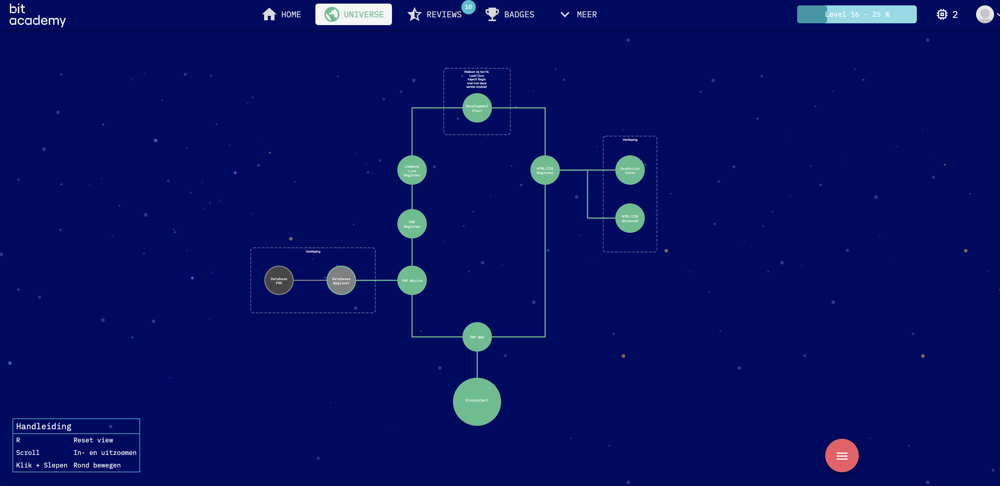
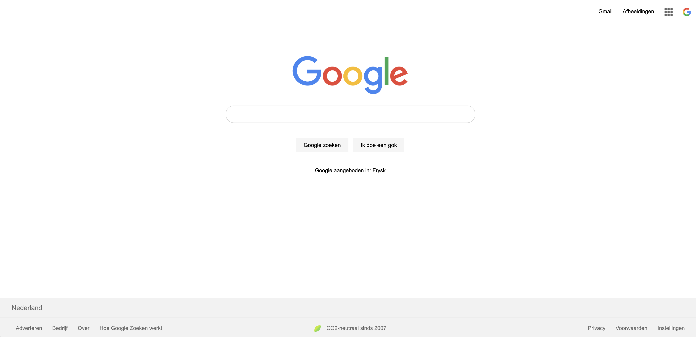

Completed course: Bit Academy - Full Stack Web Development
On September 13th 2021, I started a Full Stack Web Development course at Bit-Academy in The Netherlands. I completed the course on October 29th 2021. The key course content involved HTML, CSS and PHP. I chose to do several additional, optional modules that focussed on JavaScript and MySQL.
I spent most of my time on Jarvis, an e-learning environment created by Bit-Academy. Jarvis is a digital 'universe' made up of modules that contain exercises, videos and quizzes on different programming languages.
To hand in and complete exercises, credits were needed. These were earned by reviewing the code of other students. This teaching method worked very well. Seeing how other students took different approaches to solving the same problem was extremely helpful and sped up my learning.
Exercises progressed from relatively easy at the start of a module, towards more difficult at the end. Modules often concluded with a challenge or a project, where you were asked to apply everything you learned. Examples of final projects include rebuilding the Google homepage and building a rock, paper, scissors game using JavaScript.
In addition to the exercises on Jarvis, 10 Zoom sessions with a Bit-Academy coach were organised. These sessions were mainly used by coaches to discuss topics that were not included in the modules, such as the use of extensions in VS Code or current trends in the IT sector. Breakout rooms were also made to allow for coding practice and asking questions.
Last but not least, Bit-Academy coaches held live coding sessions every day. Through Slack, students were able to vote for topics they wished to get a better grasp of. One of the topics was then selected for the live coding session. Furthermore, coaches were available on Slack to ask questions to everyday.
I would like to thank Bit-Academy for allowing me to participate in this course. I would also like to thank Arno and Sander for their guidance and being available whenever I had questions.